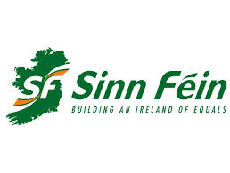

Party Manifestos
Centre-right/moderate right party. Considered to be more on the political right compared to its main rival, Fianna Fail. Promotes the ideas of market capitalism whilst combining a social policy favoring social insurance
It is strong favour of the European Union and opposed to physical force Irish republicanism.
Fine Gael has a strong affinity with Michael Collins and his legacy.
Core values: Quality of opportunity, fiscal rectitude, free enterprise and reqard, individual rights and responsibilties
Centre to centre-right party, and conservative party. Seen as to the left of Fine Gael, and to the right of Sinn Fein, and the Labour party. Represents people from all soc
Right wing fiscally, relaxed regulation, and promote free markets.
Centre-right on social issues, avoid advocating abortion but have backed same sex marriage.
Seen as a classic populist party, in that its only policy normally is to follow the crowd, and so what it thinks the public wants, not because it is right but because it is popular.
Core values: Conservatism; Populism

Considered a deocratic socialist or left-wing party. Pledges itself to supporting minorityy rights, migrants' rights, and eradcicating poverty.
Central aim of the party is to have a united 32 county Ireland.
It is not in favour of the extenstion of legalised abortion to Northern Ireland, although they are opposed to the attitudes of in society which 'pressurise women' to have abortions and 'criminalise' women who make this decision.
Supports same-sex marriage.
Is considered Eurosceptic, and urged a No vote in the Lisbon Treaty. Has seemed to be sifting its attitude in this regard though in recent years, and has become more Pro-European. Has said it Northern Ireland were to exit the European Union, it 'would be absolutely disastrous for this island and particularly for us here in the North'.
Core values: Democratic socialism, left-wing nationalism.
More left-wing than any of the other aforementioned parties. Considered secular, and as such fought to separate church and state in the 70s-80s. Anti-capitalist
Aim to represent the needs of the working class people.
Worked to legalise contraception for single people in Match 1985.
A commitment to universally free and accessible education.
Was the first major party to oppose Ireland's consitutional ban on divorce.
Actively acknowledge poverty, and set out policies in order to rectify it.
Core values: Social democracy